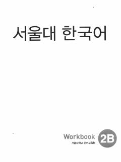

SNKoreys tilini o'rganuvchilar uchun grammatika va so'z boyligini mustahkamlovchi amaliy ish daftari.
"Seoul National University Korean Workbook 2B" — bu asosiy darslikni to'ldiruvchi va mustahkamlovchi amaliy mashqlar to'plami bo'lib, so'z boyligi hamda grammatikani chuqur o'rganishga yordam beradi. Kitob tinglash, o'qish, yozish va so'zlashuv ko'nikmalarini rivojlantiruvchi hamda TOPIK imtihoniga tayyorlovchi maxsus mashqlarni o'z ichiga oladi. Har uch birlikdan so'ng takrorlash bo'limlari berilgan bo'lib, o'quvchining o'zlashtirish darajasini baholash imkonini beradi.